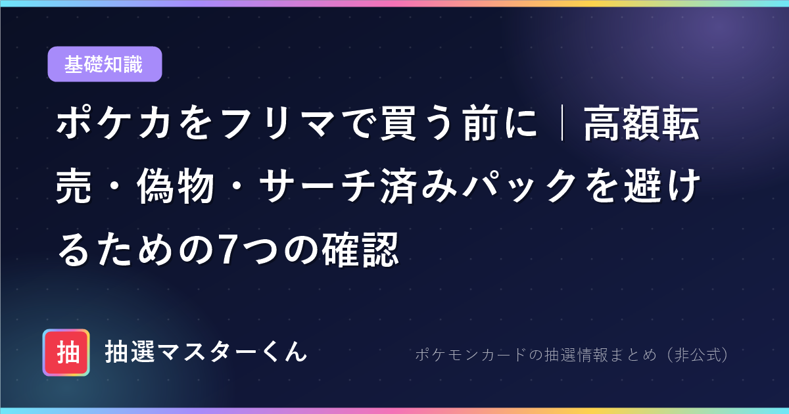

ポケカをフリマで買う前に｜高額転売・偽物・サーチ済みパックを避けるための7つの確認

人気の新弾が抽選に外れると、フリマアプリやネットオークションで探したくなります。ただ、そこには定価の何倍もの価格や、偽物・中身に手を加えられた商品といったトラブルもあります。買う前に確認したいことをまとめます。
まずは「待つ」選択肢を考える
人気商品は、発売後に追加の抽選や再販が行われることがよくあります。発売直後の高値で買うより、少し待ったほうが定価で買える可能性があります。抽選一覧で今受付中の抽選も確認してみてください。
フリマで買うときの7つの確認
- 定価を知っておく：拡張パックは1パック200円前後が基本です（30th CELEBRATIONは360円など例外もあります）。定価がわかれば、どれくらい上乗せされているか判断できます
- BOXはシュリンクの状態を確認：未開封のBOXは透明なフィルム（シュリンク）で包まれているのが一般的です。破れや、貼り直したような跡がないか、写真で確かめましょう
- バラのパックは慎重に：バラ売りのパックは、重さなどで中身を調べた「サーチ済み」の可能性があります。当たりが抜かれていることも考えられます
- 出品者の評価と取引実績を見る：評価が少ない、悪い評価が多い出品者は避けるのが無難です
- 写真が少ない・ネットの画像を使っている出品は避ける：実物の写真がない出品は、状態がわかりません
- 相場より安すぎるものも疑う：極端に安い出品は、偽物や詐欺の可能性があります
- アプリの外で取引しない：「直接振り込んでくれれば安くする」といった誘いには乗らないようにしましょう。補償が受けられなくなります
シングルカード（1枚売り）を買うなら
欲しいカードが決まっているなら、パックを何十個も開けるより、カード専門店でシングルカードを買うほうが安く済むことも多いです。専門店なら、状態の確認や真贋のチェックもしてもらえます。
転売を広げないために
高額な転売品を買う人がいる限り、転売はなくなりません。急ぎでなければ、正規の販売店で定価で買うことが、ファンみんなにとって一番の対策になります。
当サイトは非公式のファンサイトです。価格・日程などは記事公開時点の情報なので、最新の情報は公式サイトや各販売店でご確認ください。